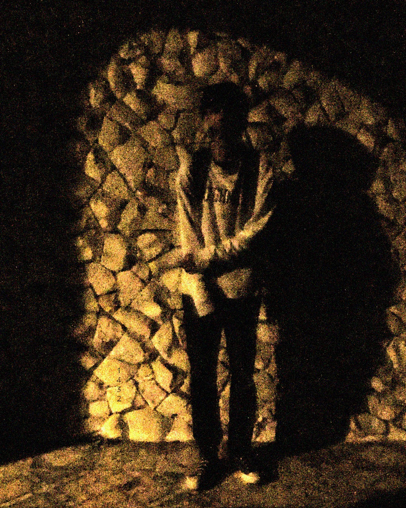
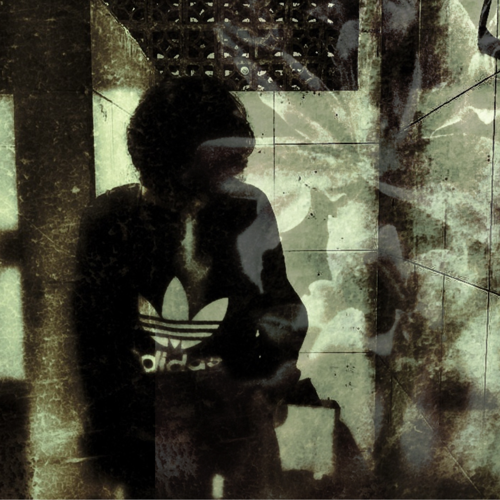

Release
Single (2026)

she shame
(Click cover to view lyrics)
01. she shame
[verse] As long as I’m still useful, you’ll keep me around until I starve, you manipulate the world while you keep poisoning your own soul. [chorus] Don't worry, I won't come out and ruin your little act I’m too busy swallowing my pride after fighting so hard for someone who never give a damn. [verse] All this time, you’ve just been sucking the life and sanity out of me, and now, I’m just locked away in the corner of your shame." [chorus] Don't worry, I won't come out and ruin your little act I’m too busy swallowing my pride after fighting so hard for someone who never give a damn.
EP (2026)

(Mr.Ry)Mystery
(Click cover to view lyrics)
01. DREAM ↓
(Whispered/Spoken word)
"Midnight... it's been a long night."
"The ceiling looks different today."
(Verse)
Before the curtain falls...
Before the colors bleed...
I’m just writing down the things I don't want to be.
(Chorus)
I’m making a list of the ghosts in this room
Starting with the one...
The one who looks like me.
then there is
The one who always smiles,
The one who does nothing all day,
The one who can never decide,
The one who is born to lose,
And the one... who just wants to be nothing
02. TRACK 2 TITLE ↓
Once again, the vision returns
Monochrome, with a layer of blue
Making my voice hum in circles
And my hair, a mess of shadows
[Verse 2]
Just searching for someone to blame
Dancing with a heart, no corrections made
In this very second, I feel it...
Time has stopped at the broken needle
[Bridge]
(Time has stopped...)
(At the broken needle...)
Hiding behind this mystery
Trying to rewrite the loyalty
Scars won't fade away
bleeding just the same
Still searching for someone to blame?
Dancing with a heart, no corrections made
Look at us now, in this second...
Time has stopped at your broken needle
fade away again
i know i cant go home
You curse my freezing night
drown in your mystery
03. PART 1: BLOOM ↓
How are you lately?
Is your world brighter now?
I heard your plans are turning out fine,
It’s good to see you finally smile,
Finding everything you wanted.
So, how’s your new friends?
Are they kind like I was?
You look so happy in your pictures
Life must be easy for you now.
04. PART 2: GLOOM ↓
[Verse 1]
The sarcastic smile
With a cliché song
Damaging the ship's hull
Letting the cold water win
[Verse 2]
Proudly upon the branch
Grief without a wound
My role altered in a flash
Surely, a cursed death
[Chorus]
withered tree
(what a pity)
the moonlight
(always there)
The drizzling rain
(im scare)
she gone
(I am finally undone)
[Spoken word]
That night I met a dying tree,
where none would dare to tread.
With just a beer to keep me whole,
the rain poured overhead.
Trapped underneath its hollow crown,
touched by the drifting chill,
at least I had its silent grace
to keep the darkness still.
And as I closed my eyes to sleep,
beneath the weeping sky,
I gave that lonely, withered tree
my very last goodbye.
05. FINAL CHAPTER ↓
There is no warm hug at the end of the story,
Don't you dare hope for any pretend tears.
"Swallow the bone," she said at the crossroads,
Everything that is lacking will be enough.
It’s not always about the void, but a way to look alive.
Your heart is so biased, draining my blood,
Becoming a catalyst for the collapsing night,
Chasing catharsis in someone else's plight.
Watching a new spark that you chose to ignite
February 14th, my breakfast left untouched.
Just another day of swallowing my pride.
June 17th, breaking even more.
You celebrate what I am suffering for